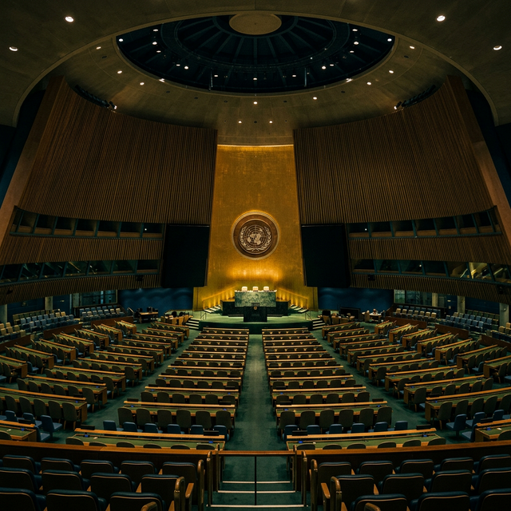
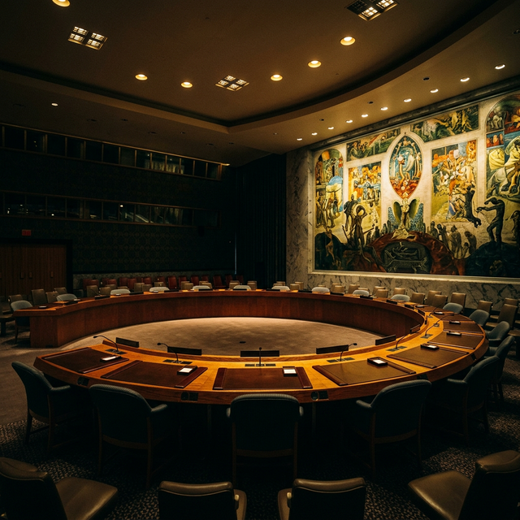
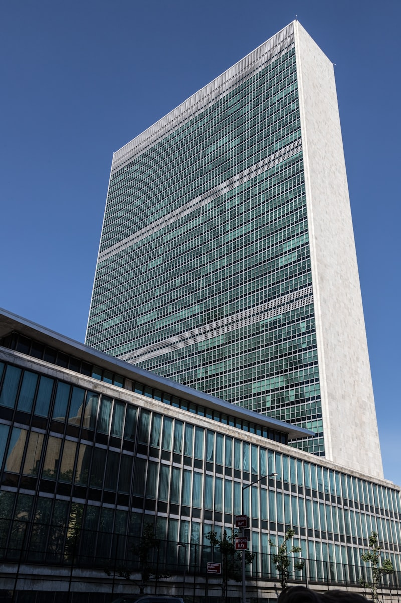
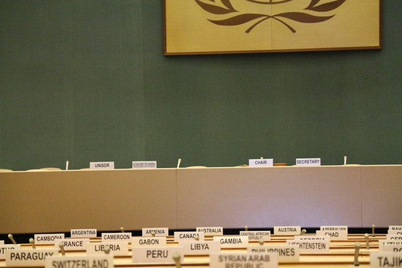

The Six Pillars
Navigate the six principal organs of the United Nations — each with its own mandate, member states, and active matters.

General Assembly
The main deliberative, policymaking, and representative organ. All 193 Member States have equal representation.
Explore →
Security Council
Primary responsibility for international peace and security. 15 members including 5 permanent with veto power.
Explore →
Economic & Social Council
Coordination and recommendations on economic, social, and environmental issues and SDG implementation.
Explore →
International Court of Justice
The principal judicial organ. Settles legal disputes between States and gives advisory opinions on legal questions.
Explore →
Secretariat
Carries out the day-to-day work of the Organization. Headed by the Secretary-General with departments worldwide.
Explore →
Trusteeship Council
Supervised Trust Territories' transition to self-governance. Suspended after Palau's independence in 1994.
Explore →